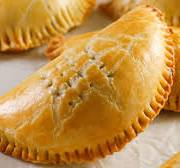

Meat Pie
Ingredients
For the Dough:
- 4 cups all-purpose flour
- 1 tsp baking powder
- 1/2 tsp salt
- 250g (1 cup) margarine or butter (cold, cut into cubes)
- 1/2 cup cold water (or as needed)
- 1 egg (for egg wash)
For the Filling:
- 300g minced meat (beef or your choice)
- 2 medium potatoes (peeled and diced small)
- 1 medium carrot (peeled and diced)
- 1 small onion (chopped)
- 1 seasoning cube (Maggi or Knorr)
- Salt and pepper to taste
- 1 tbsp flour (for thickening)
- 2 tbsp vegetable oil
- 1/4 cup water or stock
Preparation:
- Make the Filling: Heat oil in a pan, add onions, and cook until soft. Add minced meat and cook until browned.
- Add diced carrots and potatoes. Cook for 3–5 minutes, then add seasoning, salt, pepper, and a little water or stock. Simmer until vegetables are soft.
- Add 1 tablespoon of flour to thicken the mixture. Stir well and set aside to cool completely.
- Prepare the Dough: In a large bowl, mix flour, baking powder, and salt. Add cold margarine and rub into the flour until it resembles breadcrumbs.
- Add cold water a little at a time until it forms a smooth dough. Do not overwork the dough. Cover and let rest for 10 minutes.
- Preheat oven to 180°C (350°F). Line a baking tray with parchment paper.
- Shape the Pies: Roll out the dough on a floured surface. Cut into circles (using a bowl or cutter).
- Place a spoonful of filling in the center of each circle. Fold over and seal the edges with a fork.
- Place on the baking tray. Beat 1 egg and brush the tops for a golden finish.
- Bake for 25–30 minutes or until golden brown. Let cool slightly before serving.
Fish Roll
Ingredient
- 2 cups all-purpose flour
- 1/2 tsp baking powder
- 1/4 cup sugar
- 1/4 tsp salt
- 1/4 cup margarine or butter (softened)
- 1/4 cup water (adjust as needed)
- 1 egg (for the dough)
- 6 boiled eggs (peeled)
- Vegetable oil for deep frying
Preparation:
- In a bowl, mix flour, baking powder, sugar, and salt together.
- Add margarine and mix with fingers until it looks like breadcrumbs.
- Add one egg and water gradually. Mix until it forms a smooth but firm dough.
- Divide the dough into portions, depending on the number of boiled eggs.
- Flatten each dough portion and wrap it around a boiled egg, sealing all edges.
- Heat oil in a deep pan over medium heat.
- Fry the wrapped eggs until golden brown and cooked through, turning occasionally.
- Drain on paper towels and allow to cool slightly before serving.
Egg Roll
Ingredients
- 2 cups all-purpose flour
- 1/2 tsp baking powder
- 1/4 cup sugar
- 1/4 tsp salt
- 1/4 cup margarine or butter (softened)
- 1/4 cup water (adjust as needed)
- 1 egg (for the dough)
- 6 boiled eggs (peeled)
- Vegetable oil for deep frying
Preparation:
- In a bowl, mix flour, baking powder, sugar, and salt together.
- Add margarine and mix with fingers until it looks like breadcrumbs.
- Add one egg and water gradually. Mix until it forms a smooth but firm dough.
- Divide the dough into portions, depending on the number of boiled eggs.
- Flatten each dough portion and wrap it around a boiled egg, sealing all edges.
- Heat oil in a deep pan over medium heat.
- Fry the wrapped eggs until golden brown and cooked through, turning occasionally.
- Drain on paper towels and allow to cool slightly before serving.
Chinchin

Ingredients
- 2 cups all-purpose flour
- 1/4 cup sugar (adjust to taste)
- 1/4 tsp salt
- 1/2 tsp baking powder
- 1/4 cup margarine or butter (softened)
- 1/4 cup milk (or water)
- 1 egg (optional)
- 1/2 tsp nutmeg (optional for flavor)
- Vegetable oil (for deep frying)
Preparation:
- In a large bowl, mix the flour, sugar, salt, baking powder, and nutmeg (if using).
- Add the margarine and mix until crumbly.
- Add the egg and milk. Mix to form a smooth but firm dough.
- Roll out the dough on a floured surface to about 1/4 inch thickness.
- Cut into small squares or strips using a knife or pizza cutter.
- Heat oil in a deep pan over medium heat.
- Fry the chinchin in batches until golden brown and crispy.
- Remove and drain on paper towels.
- Allow to cool and enjoy!
Puff-Puff

Ingredients
- 2 cups all-purpose flour
- 2 teaspoons active dry yeast
- 1/4 cup sugar
- 1/4 teaspoon salt
- 1 1/4 cups lukewarm water
- Vegetable oil (for deep frying)
- Optional: a pinch of nutmeg or cinnamon for extra flavor
Preparation:
- In a bowl, mix the flour, sugar, salt, and nutmeg (if using).
- Dissolve the yeast in lukewarm water and let it sit for 5–10 minutes until foamy.
- Combine the yeast mixture with the flour mixture and stir into a smooth, sticky batter.
- Cover the bowl with a clean cloth and let it rise in a warm place for 1 hour or until doubled in size.
- Heat oil in a deep pan over medium heat.
- Use your hand or a spoon to scoop small portions of the dough into the hot oil.
- Fry in batches until golden brown, turning occasionally (about 4–6 minutes per batch).
- Remove and drain on paper towels.
- Serve warm, optionally dusted with powdered sugar.
Coconut chin-chin

Ingredients
- 2 cups grated fresh coconut (or desiccated coconut)
- 1 cup sweetened condensed milk
- ½ cup granulated sugar
- 1 tsp vanilla extract
- Optional: a few drops of food coloring (e.g. pink or green)
- Butter or oil for greasing tray
Preparation:
- Grease a flat tray or plate and set aside.
- In a non-stick saucepan, combine the coconut, condensed milk, and sugar.
- Place over medium heat and stir continuously for about 10–15 minutes, until the mixture thickens and pulls away from the sides of the pan.
- Add vanilla extract and food coloring (if using), and stir well.
- Pour the hot mixture into the greased tray and spread evenly.
- Allow it to cool slightly, then cut into squares while still warm.
- Let it cool completely before serving or storing in an airtight container.
Buns

Ingredients
- 3 ½ cups (440g) all-purpose flour
- 2 ¼ tsp active dry yeast (1 packet)
- 1 cup (240ml) warm milk
- ¼ cup (50g) sugar
- 1 tsp salt
- 1 large egg
- ⅓ cup (75g) unsalted butter, softened
- Extra flour for dusting
Instructions
- In a small bowl, dissolve the yeast in warm milk and let it sit for 5–10 minutes until frothy.
- In a large mixing bowl, combine flour, sugar, and salt.
- Add the yeast mixture, egg, and softened butter to the dry ingredients.
- Knead the dough for about 8-10 minutes until smooth and elastic.
- Place the dough in a greased bowl, cover with a damp cloth, and let it rise for about 1 hour or until doubled in size.
- Punch down the dough and divide it into 12 equal portions.
- Shape each portion into a bun and place on a baking tray lined with parchment paper.
- Cover and let the buns rise for another 30–40 minutes.
- Preheat oven to 375°F (190°C). Bake buns for 15-20 minutes or until golden brown.
- Cool on a wire rack before serving.
Sausage Roll
Ingredients
- 500g sausage meat
- 1 sheet of puff pastry (ready-rolled)
- 1 small onion, finely chopped (optional)
- 1 clove garlic, minced
- 1 tsp dried herbs (thyme or sage)
- 1 egg (for egg wash)
- Salt and pepper to taste
Prepartion:
- Preheat the oven to 200°C (400°F).
- In a bowl, mix the sausage meat, onion, garlic, herbs, salt, and pepper.
- Roll out the puff pastry and cut it in half lengthwise.
- Place the sausage meat mixture along one edge of each pastry strip.
- Roll the pastry over the filling and seal the edge with a bit of egg wash.
- Cut into smaller rolls and place on a baking tray.
- Brush the tops with egg wash for a golden finish.
- Bake for 20–25 minutes or until golden brown and cooked through.
Coconut Chin-Chin
Ingredients
- 2 cups all-purpose flour
- 1/2 cup granulated sugar
- 1/2 cup grated or desiccated coconut
- 1/4 cup coconut milk (or water)
- 1/4 cup butter (softened)
- 1/2 teaspoon baking powder
- 1/4 teaspoon salt
- 1 teaspoon vanilla extract (optional)
- Vegetable oil for deep frying
Preparation:
- In a large bowl, mix flour, sugar, grated coconut, baking powder, and salt.
- Add the softened butter and mix until crumbly.
- Gradually add coconut milk and vanilla (if using) to form a soft but non-sticky dough.
- On a floured surface, roll out the dough to about 1/4 inch thickness.
- Cut into small cubes or strips using a knife or cutter.
- Heat oil in a deep pan over medium heat.
- Fry the chin chin in batches until golden brown and crisp, stirring occasionally for even cooking.
- Remove and drain on paper towels. Let cool completely before storing in an airtight container.
Doughnut
Ingredients
- 2 1/4 teaspoons (1 packet) active dry yeast
- 1/4 cup warm water (about 110°F or 45°C)
- 3/4 cup warm milk
- 1/4 cup granulated sugar
- 1/2 teaspoon salt
- 1 egg
- 1/4 cup unsalted butter, melted
- 2 1/2 cups all-purpose flour
- Vegetable oil for frying
- Sugar or glaze for topping (optional)
Preparation:
- In a small bowl, dissolve yeast in warm water and let it sit for 5-10 minutes until frothy.
- In a large mixing bowl, combine milk, sugar, salt, egg, melted butter, and the yeast mixture.
- Gradually add flour, mixing until a dough forms.Knead on a floured surface for about 5 minutes until smooth.
- Place the dough in a greased bowl, cover, and let rise in a warm place for 1-2 hours until doubled in size.
- Roll out the dough to about 1/2 inch thickness. Cut with a doughnut cutter or round cookie cutters.
- Let cut doughnuts rise again for 30-45 minutes until puffy.
- Heat oil in a deep fryer or large pot to 350°F (175°C).
- Fry doughnuts for 1-2 minutes per side until golden brown. Remove and drain on paper towels.
- Dust with sugar or dip in glaze while warm, if desired.
Scotch Egg

Ingredients:
- 4 large eggs
- 450g (1 lb) sausage meat
- 1 teaspoon mustard (optional)
- 1 tablespoon fresh parsley, chopped
- Salt and pepper to taste
- 100g (3.5 oz) plain flour
- 2 additional eggs, beaten
- 150g (5 oz) breadcrumbs
- Vegetable oil for deep frying
Preparation:
- Boil 4 eggs for 7 minutes, then transfer to cold water, peel and set aside.
- In a bowl, mix sausage meat with mustard, parsley, salt, and pepper.
- Divide sausage mix into 4 portions. Flatten each and wrap around each egg completely.
- Roll each sausage-covered egg in flour, then dip in beaten egg, and coat with breadcrumbs.
- Heat oil in a deep fryer or deep pan to 170°C (340°F).
- Fry each Scotch egg for 5–6 minutes or until golden brown and fully cooked.
- Drain on paper towels. Serve warm or cold.
Hot Dog
Ingredients
- 4 hot dog sausages (beef or chicken)
- 4 soft bread rolls (Agege bread or hot dog buns)
- 2 tablespoons suya spice (yaji)
- 1 large onion (sliced)
- 1-2 scotch bonnet peppers (ata rodo), chopped
- 2 tablespoons vegetable oil
- 1 small tomato, chopped
- Mayonnaise and ketchup (optional)
- Sliced cabbage or lettuce (optional)
Preparation:
- Heat oil in a pan. Add chopped tomato, onion, and scotch bonnet pepper. Fry for 5–7 minutes until soft and fragrant.
- Add the sausages to the pan and fry for 3–5 minutes until browned. Sprinkle suya spice over them and cook for another 1–2 minutes.
- Slice the bread rolls open (not completely through). Lightly toast if desired.
- Place a sausage into each roll. Top with the fried pepper-onion sauce.
- Optionally, add mayonnaise, ketchup, or fresh cabbage for extra crunch.